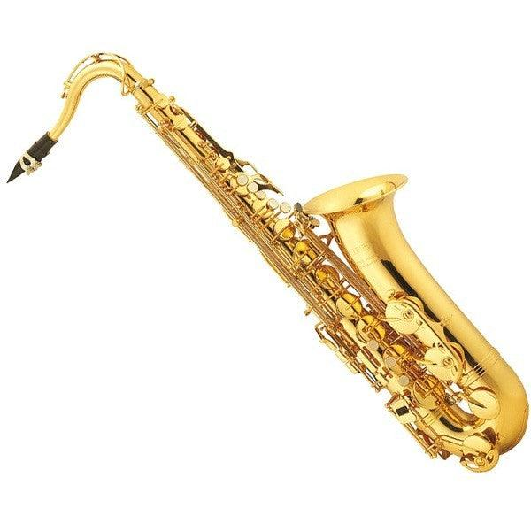
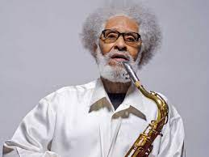

El Saxofón: Historia, Maestros y su Legado Musical
El saxofón, un instrumento de viento-metal inventado en el siglo XIX por Adolphe Sax, ha dejado una marca profunda en la historia de la música. Su sonido distintivo y su versatilidad lo han llevado a ser un elemento crucial en una amplia gama de géneros, desde el jazz y el blues hasta la música clásica y el pop. A lo largo de los años, músicos icónicos y maestros del saxofón han dejado una huella imborrable en la música y la cultura, contribuyendo a su evolución y popularidad.
Los Comienzos del Saxofón y su Popularidad en la Música Clásica
El saxofón fue creado en 1840 por el belga Adolphe Sax, con la intención de combinar la cualidad expresiva de los instrumentos de viento-madera con la potencia de los vientos-metal. Aunque inicialmente fue diseñado para la música militar, pronto encontró un lugar en la música clásica y de orquesta. El compositor y director de orquesta francés Hector Berlioz fue uno de los primeros en reconocer el potencial del saxofón, y lo incorporó en algunas de sus composiciones. A medida que el siglo XIX avanzaba, el saxofón se integró en diversas orquestas y bandas, y se convirtió en un componente crucial en la interpretación de obras clásicas y contemporáneas.
El Saxofón en la Música Popular: El Auge del Jazz y el Blues
A finales del siglo XIX y principios del XX, el saxofón encontró un terreno fértil en la música popular, especialmente en el jazz y el blues. Músicos como Sidney Bechet y Coleman Hawkins llevaron el saxofón a nuevas alturas, introduciendo improvisación y un estilo emocional en sus interpretaciones. El saxofón, con su capacidad para expresar una amplia gama de emociones, se convirtió en una voz destacada en el mundo del jazz, contribuyendo a la creación de atmósferas emotivas y energéticas en las composiciones.

El Genio de Charlie Parker y John Coltrane
A mediados del siglo XX, dos nombres se destacaron como auténticos maestros del saxofón: Charlie Parker y John Coltrane. Charlie Parker, conocido como "Bird", revolucionó el mundo del jazz con su habilidad para tocar a velocidades asombrosas y su enfoque innovador en la improvisación. Su estilo influenció a generaciones posteriores de músicos y dejó una marca indeleble en la música moderna. Por otro lado, John Coltrane llevó el saxofón a nuevos territorios con su virtuosismo técnico y su capacidad para explorar melodías y armonías complejas. Coltrane se convirtió en una figura central en el movimiento del "free jazz" y su legado sigue influyendo en músicos de todas las generaciones.
La Fusión y la Era Contemporánea
A medida que avanzaba el siglo XX, el saxofón continuó su evolución, adaptándose a una variedad de géneros y estilos musicales. En la década de 1960, el saxofonista Ornette Coleman desafió las convenciones del jazz al introducir el free jazz, un enfoque que enfatizaba la improvisación libre y la experimentación sonora. Además, el saxofón encontró su lugar en géneros como el funk, el rock y el pop, gracias a artistas como Clarence Clemons, quien tocó con Bruce Springsteen y su E Street Band, y David Bowie.
El Legado Duradero de los Maestros del Saxofón
Los maestros del saxofón han dejado una huella profunda en la historia de la música. Más allá de Parker y Coltrane, músicos como Sonny Rollins, Stan Getz y Cannonball Adderley han contribuido a la evolución y la popularización del saxofón en diversos géneros. El saxofón ha demostrado su versatilidad, desde las baladas emotivas hasta las explosivas interpretaciones en vivo.

En resumen, el saxofón ha recorrido un viaje apasionante a lo largo de los siglos, desde sus inicios en la música clásica hasta su destacado papel en géneros como el jazz, el blues y más allá. Los maestros del saxofón han desempeñado un papel fundamental en la evolución de este instrumento, llevando su sonido distintivo a nuevas alturas y dejando un legado duradero en la historia de la música. A medida que el saxofón continúa su evolución en la música contemporánea, su capacidad para evocar emociones y conectarse con las audiencias sigue siendo tan poderosa como siempre.